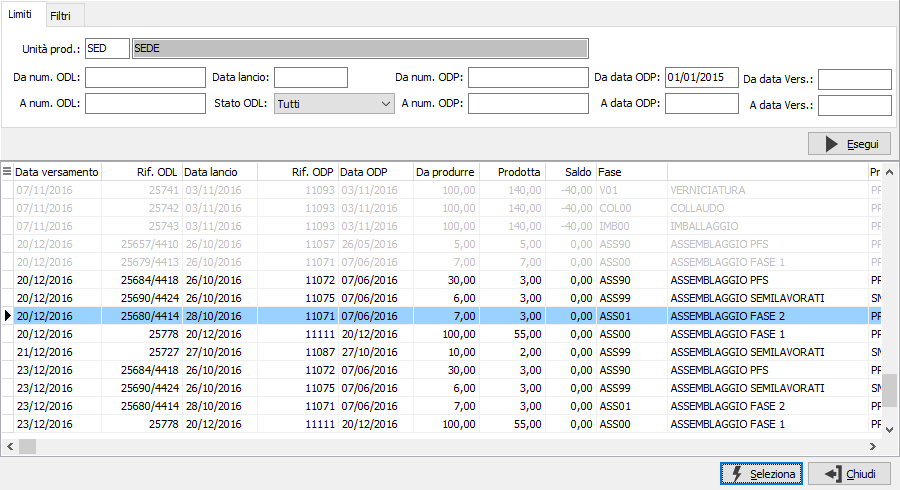
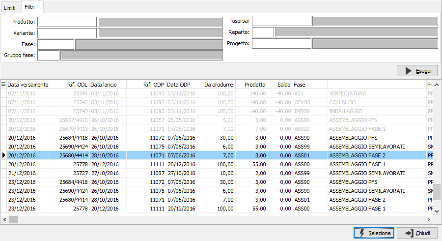
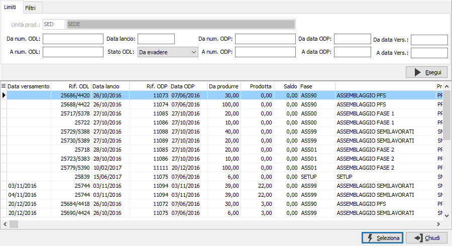

Ricerca ODL
 Sia
sulla procedura di Gestione operazioni bordo macchina
che sulla Manutenzione versamenti è presente
il pulsante che accede alla finestra di ricerca degli ODL. Nei parametri
viene richiesta l'unità produttiva con proposta l'unità produttiva di
default valida per l'utente connesso ad OS1; è possibile solo scegliere
l'unità produttiva, se gestite in configurazione le unità produttive multiple;
è possibile specificare diversi limiti tra numero ODL e ODP, data lancio,
data ODP, data versamento ed i vari stati in cui si può trovare l'ODL
(provvisorio, pianificato, lanciato, in corso, evaso, da evadere, tutti).
Sia
sulla procedura di Gestione operazioni bordo macchina
che sulla Manutenzione versamenti è presente
il pulsante che accede alla finestra di ricerca degli ODL. Nei parametri
viene richiesta l'unità produttiva con proposta l'unità produttiva di
default valida per l'utente connesso ad OS1; è possibile solo scegliere
l'unità produttiva, se gestite in configurazione le unità produttive multiple;
è possibile specificare diversi limiti tra numero ODL e ODP, data lancio,
data ODP, data versamento ed i vari stati in cui si può trovare l'ODL
(provvisorio, pianificato, lanciato, in corso, evaso, da evadere, tutti).

è presente poi una pagina
relativa ai filtri dove è possibile inserire prodotto, variante, fase,
gruppo fase, risorsa, reparto e progetto se gestito, in modo da restringere
di più il campo della ricerca. Premendo il pulsante Esegui vengono visualizzati
nella griglia i dati relativi agli ODL trovati corrispondenti ai limiti
ed ai filtri inseriti; gli ODL evasi, se presenti, saranno evidenziati
dal colore grigio chiaro.
Con doppio clic sull'ODL desiderato o selezionandolo e premendo il pulsante
Seleziona, sarà utilizzato l'ODL scelto dalla procedura che ha richiamato
la finestra di ricerca.

Se la finestra viene richiamata dalla procedura di gestione operazioni
bordo macchina o dalla fase di inserimento della manutenzione versamenti
il campo stato ODL viene preimpostato su Da evadere e nella pagina dei
filtri viene impostato il filtro sulla risorsa indicata a video, quest'ultimo
campo non è modificabile, in modo da limitare la selezione degli ODL e
non rischiare di selezionare dati non coerenti con l'operazione che si
sta eseguendo.
